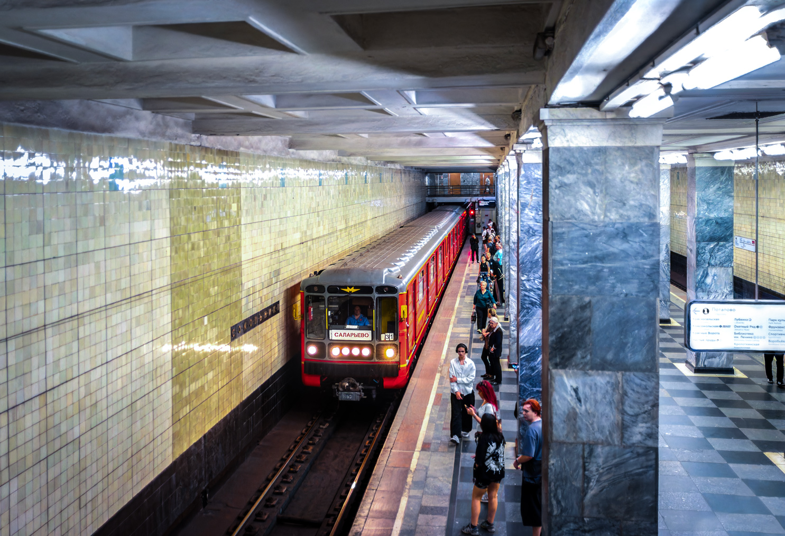
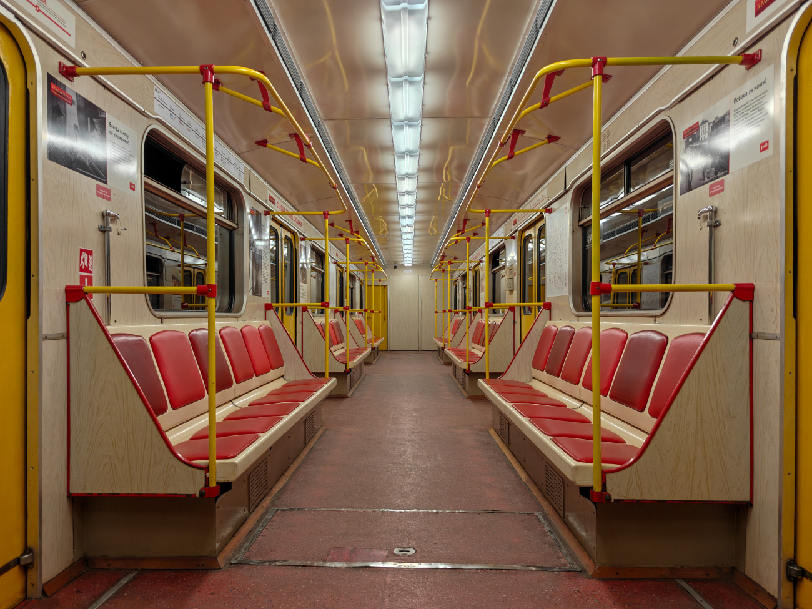

Красная стрела
Этот поезд был построен в августе 2006 года. После прохождения испытаний в ТЧ-2 «Сокол», «Красная стрела» отправилась на работу в ТЧ-1 «Северное». Состав был построен в честь 75-летия легендарного поезда «Красная стрела», в честь него он так и называется.
09.10.2006 состав впервые вышел на линию с пассажирами. До сих пор ходит на Сокольнической линии — вы можете на нём прокатиться!
Общая информация
📅 Постройка
Август 2006 года. Заводская постройка вагонов модели 81-714.5М (МВМ).
🏭 Депо
ТЧ-1 «Северное». Испытания проходил в ТЧ-2 «Сокол».
🎉 Повод
Построен в честь 75-летия поезда «Красная стрела» (1931–2006).
🛤️ Линия
Сокольническая линия (СокЛ). Работает с пассажирами с 09.10.2006.
Состав поезда
2763 — 1699 — 1700 — 1701 — 1702 — 1938 — 2764
(с 04.2010, после замены вагона 1703 на 1938)
Вагон №1702
| Параметр | Значение |
|---|---|
| Модель | 81-714.5М (МВМ) |
| Построен | 09.2006 |
| Депо | ТЧ-1 «Северное» |
| Назначение | Пассажирский |
| Начало работы | 09.10.2006 |
| Текущее состояние | Эксплуатируется |
| Примечание | «Красная стрела» |
История: 13.09.2006 — отправлен с завода в метрополитен; 15.09.2006 — поступил в метрополитен через гейт ТЧ-2 «Сокол»; 17.09.2006 — поступил в депо приписки ТЧ-1 «Северное»; 09.10.2006 — начал работу с пассажирами; 08.2016 — перекрашен по новой схеме; 10.2015 — капитальный ремонт / ВРК «Выхино»; перекрашен по новой схеме; 16.05.2026 и 17.05.2026 — участвовал в Параде поездов на Кольцевой линии.
Вагон №1703 (выведен из эксплуатации)
| Параметр | Значение |
|---|---|
| Модель | 81-714.5М (МВМ) |
| Построен | 09.2006 |
| Депо | ТЧ-1 «Северное» |
| Назначение | Пассажирский |
| Начало работы | 09.10.2006 |
| Отставлен | 29.03.2010 |
| Текущее состояние | Выведен из эксплуатации / ожидание исключения |
| Примечание | «Красная стрела» |
История: 13.09.2006 — отправлен с завода в метрополитен; 15.09.2006 — поступил в метрополитен через гейт ТЧ-2 «Сокол»; 17.09.2006 — поступил в депо приписки ТЧ-1 «Северное»; 29.03.2010 — серьёзно повреждён на станции «Лубянка» в результате террористического акта, восстановлению не подлежит, ожидает списания; 11.05.2010 — заменён на вагон №1938.
⚠️ Важно: 29 марта 2010 года в вагоне 1703 произошёл террористический акт на станции «Лубянка». Вагон был отстранён от эксплуатации и заменён на вагон 1903 (позже — 1938). На данный момент вагон 1703 находится на парковых путях депо ТЧ-1.
Экстерьер и интерьер
🎨 Окрас
- 08.2006 — 08.2016: красного цвета с жёлтыми полосами по борту и рисунком «75» на дверях
- С 08.2016: красного цвета с жёлтыми полосами по борту; двери полностью закрашены в красный цвет
🔧 Конструкция
- Три ребра жёсткости
- Расположение сигнальных ламп: вертикальное
- Компоновка фар: 1-4-1
🪑 Интерьер
- Вертикальные поручни жёлтого цвета с оранжево-красными крепежами
- Антивандальные сиденья красного цвета
- Пластик светло-рыжего цвета под дерево
- Освещение: лампы типа ЛПВ-02
📅 Важные даты
- 08.2006 — постройка
- 09.10.2006 — выход на линию с пассажирами
- 29.03.2010 — теракт на «Лубянке» (вагон 1703)
- 08.2016 — перекраска по новой схеме
- 16–17.05.2026 — Парад поездов на Кольцевой линии
Фотогалерея

📸 програме

📸 Fsm

📸 Roman_0298
Нажмите на фото для увеличения
«Красная стрела» — это не просто именной состав. Это память о легендарном поезде, символ эпохи и напоминание о трагических страницах истории Московского метрополитена».